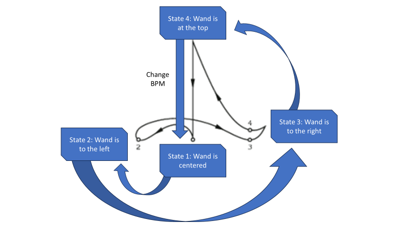
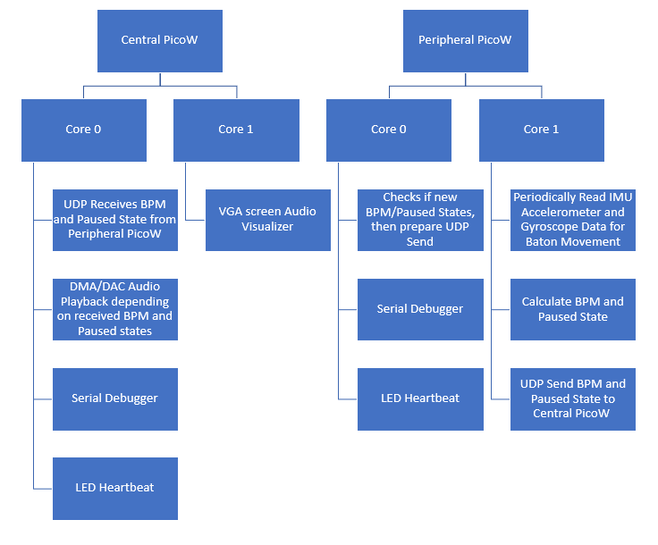
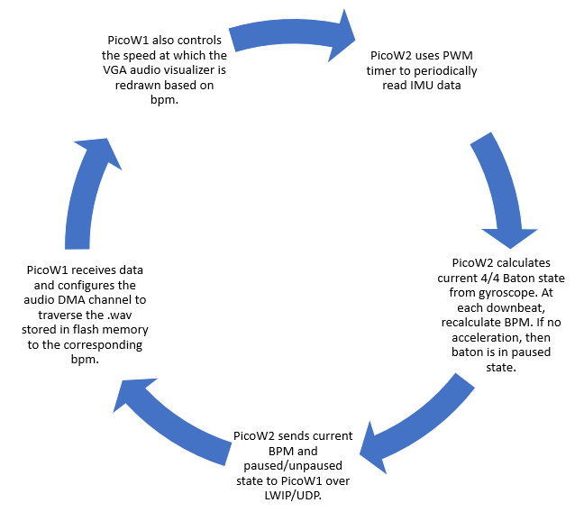
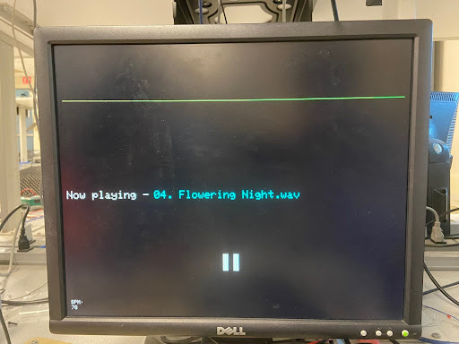
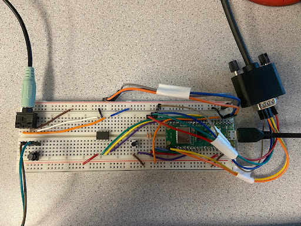
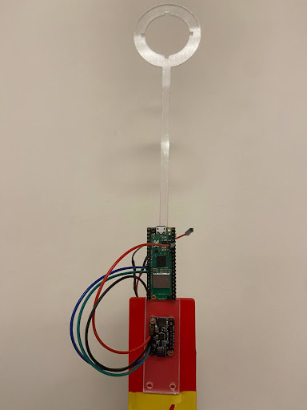

Test your rhythm skills with our rendition of a conductor baton! This baton conducts both electricity and an electronic orchestra; based on the speed at which you signal a 4/4 measure, the corresponding audio playback and visualizer will match your rhythm. The music and animation play at the beats per minute you have marked, and will pause completely if the baton stops moving.
In order to make this project, we have used two Raspberry Pi PicoW where one acts as the central station and the other as the peripheral. The central PicoW acts as the UDP access point and controls the audio output and VGA animation through direct memory access and SPI communication based on the desired output rate. The peripheral PicoW is attached to a 3D printed baton which houses an IMU to periodically detect gyroscope motion with I2C communication and a battery pack. The peripheral PicoW uses the IMU and a finite state machine to calculate the motioned beats per minute and paused/unpaused state and sends the information wirelessly to the central PicoW. The following diagram depicts how the motions of the baton in a 4/4 time signature correspond to changes in the FSM state.

Our project takes inspiration from a conductor baton, which allows a conductor to communicate tempo and pauses with the rest of the orchestra depending on the gestured motions. Since previous ECE 4760 labs discussed the use of the audio output, VGA screen, and IMU data, it was convenient to build from Labs 1-3.
Background math
Our device plays back audio using a DMA channel to transfer audio data from flash memory to the DAC. Most .wav files have a default sampling rate of 44.1 kHz, and as such the timer to trigger this DMA channel has a frequency of 44.1 kHz. We modulate the audio playback speed by increasing or decreasing the frequency of the audio DMA channel timer. This is achieved by the following line of code:
dma_factor = (125000000 / Fs) * (WAV_BPM / bpm) ;
Where 125000000 represents the 125 MHz internal clock timer of the RP2040 microcontroller, Fs represents a base audio sample rate of 44.1 kHz, WAV_BPM represents the base bpm of the song and bpm represents the desired bpm. The DMA timer fraction is then set to a value of 1 / dma_factor. The numerical value of (125000000 / Fs) represents the factor necessary to achieve a DMA clock speed of 44.1 kHz. Then the ratio of (((float) WAV_BPM) / ((float) bpm)) is used to scale up or down the factor we are dividing the DMA clock by. For example, to double the bpm from the initial song bpm, we want to double the frequency of the audio playback. This is achieved by doubling the DMA clock frequency, by halving the value of dma_factor.
Logical structure
Our two PicoW have the following protothreads running on each core:

The following highlights a simplified logic overview:

The central PicoW program can be divided into three main subsystems. The first role of the central PicoW is to output audio data to the DAC, and eventually a speaker further downstream. Approximately 12 seconds of 44.1 kHz, mono audio data approximating to 1 MB is stored on the PicoW flash memory, which can store a maximum of 2 MB. This audio data is formatted as a preprocessed array constructed via a python script, that automatically converts a 16-bit wav file into a c array of 12-bit values (the maximum resolution of the DAC) by removing the .wav header and performing some bitwise arithmetic. The data is streamed directly from flash memory to the PicoW’s SPI output which corresponds to the input of the DAC. This is achieved using a combination of two DMA channels, labeled control and data. The data DMA channel operates at 44.1 kHZ and iterates through the flash memory array, sending each value to the DAC. The data channel is chained to the control channel, which then resets the read address of the data channel back to the 0th index of the .wav array.
The second role of the central PicoW is to draw a colorful animation on the VGA screen, which is done on core 1 of the microcontroller. The VGA interfacing code was built off of the examples provided by Professor Adams. One animation drawn by the PicoW is an audio visualizer that represents the raw audio values being sent to the DAC. The exact audio values are stored by the DMA value register and plotted as a graph, with the x-axis representing time and the y-axis representing the audio value. A second animation is drawn using a timer interrupt on core 1 to pulsate at the same timing as the song’s BPM. This is done by precisely setting the timer interrupt to occur at an exact fraction of the period of each beat. For example, since the animation consists of 12 circles of an increasing radius, we set the period of the timer interrupt to be exactly 1/12 of the beat period. Thus, at every beat, the animation will complete one full cycle. The last VGA drawing consists of drawing text on the screen that displays the current BPM and song name.
The rest of the central PicoW functionality occurs on a series of threads scheduled on core 0. First, two threads correspond to sending and receiving data through UDP communication with the peripheral PicoW. A third thread is used for serial communication with the computer, which was mainly utilized for debugging purposes by manually setting variables. A fourth thread is used to check for updates in the BPM and pausing variables. A change in BPM is handled by changing the timer frequency corresponding to the audio data DMA channel. A decrease in BPM corresponds to a slower timer frequency, decreasing the DMA transfer rate and thus slowing down the audio playback accordingly. A pause is handled by aborting the audio data DMA channel, and re-enabling it when the pause is complete. A final thread on core 0 is used to blink the on-board LED, indicating a steady connection with the peripheral PicoW.
The peripheral PicoW has two jobs, one of which is to interpret IMU data into a conductor’s baton motions, and the second of which is to send command signals to the central PicoW over UDP. In order to read from the IMU, a PWM channel is used to trigger a timer interrupt that calls for new readings to be read from the IMU. The PicoW communicates with the IMU over I2C protocol to read accelerometer and gyroscope readings along three axes - this code was taken directly from Professor Adam’s MPU6050 demo code. Next, a thread on core 1 comprises a state machine that is triggered by the IMU’s gyroscope yaw or pitch readings. When the gyroscope’s yaw or pitch exceeds a certain threshold, the PicoW knows that the user is moving the conductor’s baton. The four states of the state machine correspond to the four motions a conductor must perform to demonstrate one full musical measure (assuming 4/4 timing). On the state transition from the 4th to the 1st beat, a new BPM is calculated based on the time spent in the state machine. This thread also checks for when the IMU reads no motion over five seconds, at which point a pause is started.
The second job of the peripheral PicoW is to send UDP packets to the central PicoW, which is done in core 0 of the microcontroller. A new packet is sent whenever there is a change in the BPM or pause variables. When this trigger occurs, a UDP send command thread is spawned. On top of the aforementioned threads, the peripheral PicoW also features debugging serial functionality to print current variable values as well as a thread to blink an LED when wireless communication is achieved.
Since much of the inspiration for this project came from ECE 4760 Microcontrollers labs, much of the reference design and code came from V. Hunter Adams’ Hunter-Adams-RP2040-Demos, which is based on examples from Raspberry Pi Co. The relevant sections include Audio, PWM, Sensors, and VGA_Graphics to aid in the design of our DAC/DMA audio output, PWM output, IMU usage, VGA graphics, and UART communication.
The UDP code was referenced from Bruce Land’s Symmetrical UDP send/receive from PicoW to PicoW example. Note: this example is a modified form from Pico examples and LWIP TCP/IP contribution apps. Relevant copyrights and credits include Cornell University, Andrew McDonnell, Stephan Linz, Adam Dunkels and other maintainers of the software.
Additionally, all examples use the Protothreads library which was written by Adam Dunkels.
Things that didn't work
A functionality we attempted and tried to implement was to modulate the volume of the audio playback based on the intensity of the user’s baton motions. In order to do so, a volume amplitude variable was calculated based on the average motion detected by the IMU across one full cycle of the state machine. However, we ran into challenges in determining how we could use this calculated volume fraction to adjust the amplitude of the values being sent to the DAC. Since the raw audio data is stored into an array that is directly output to the DAC, any amplitude modulation would have to occur in between the data DMA channel retrieving the array data from flash memory and sending the raw data to the SPI channels. Unfortunately, we could not find any Pico SDK functions to perform the desired manipulation of array values. A potential fix that we attempted was to use one DMA channel to transfer audio data from flash memory to a variable, multiply that variable by the amplitude, then use a second DMA channel to transfer the newly adjusted value to the SPI output. However, despite both DMA channels occurring at the same frequency, this change in architecture greatly reduced our audio quality and was scrapped in favor of pursuing other functionality.
The pause feature of our project was completed, but without all of its bugs fully ironed out. In the final demo of our project, the pause feature acts more as a reset, as it restarts the audio playback back to the beginning of the song. This is because for our final implementation, unpausing the device will restart the control DMA channel, which sets the read address of the data DMA channel to the beginning of the .wav array and restarts the song. The reason we do so is because restarting the data DMA channel directly will correctly unpause the song as the same address it was stopped at, but the channel attempts to complete the full number of data transfers corresponding to the full size of the .wav array. A fix that we attempted to implement was to utilize a third DMA channel that is enabled when the device is unpaused. This third channel would start reading at the read address that the data DMA channel stopped at as well as only transfer an amount corresponding to the number of transfers remaining when the data DMA channel was aborted. When the third channel completes its transfers, it would restart the standard data and control DMA channels. Both the correct read address and remaining transfer counts are stored in DMA registers, but despite locating these addresses we were unable to debug the third DMA channel in time for our demo.
In our initial plans for this project, we wanted to use an external memory source in order to store long durations of songs in a .wav format. We also intended for the user to be able to switch between different songs to play. Unfortunately, we did not realize that the SRAM chips available in the lab were volatile and thus lost their stored memory upon power cycle. A potential fix we considered was to load the SRAM using serial commands, but this would be a far cry from our original vision, as we would have to reload the SRAM with new data every time it was powered on. A better solution, time permitting, would be to use different, non-volatile hardware such as FRAM or an SD card with corresponding microSD breakout board to store large .wav data.
The VGA screen updates frequently in order to visualize the rapidly updating 44.1 kHz audio wave. The entire screen is redrawn approximately once per musical measure to cover up any visual bugs. Because the audio wave is drawn so rapidly, there is a slight fuzziness to the VGA drawing that is exacerbated at higher BPMs, and fixed at lower BPMs.
The human interface of our device is a 3D printed conducting baton that houses the peripheral PicoW, IMU, and batteries. This baton is quite light, with the majority of the weight being due to the batteries and are thus unavoidable. Assuming the user uses well-defined motions with the baton, the device is able to track the BPM quite effectively. The device starts to break down when the baton is moved so slowly that the IMU reading never reaches the speed threshold required to traverse the state machine. We kept these thresholds quite high to avoid sensor noise or shakiness in the baton from accidentally triggering changes in the state machine, and these thresholds can easily be changed if significantly slower baton motions are required.
Since we divided our project into two separate PicoW’s, we had effectively twice the processing power to work with. One of the more taxing operations to consider is the 44.1 kHz audio sampling, which increases in frequency as the BPM increases as well. To ensure that the audio playback does not affect the rest of our microcontroller operations, the audio playback occurs exclusively through DMA transfers and thus does not take up any processing power. We also utilize concurrency and both cores on the PicoW to maximize our program’s output. On each PicoW, one core is reserved for almost exclusively UDP communication, while the second core is reserved for either IMU reading and interpretation (in the case of the peripheral PicoW) and VGA drawing (in the case of the central PicoW).
Accuracy
Our device very accurately calculates BPM based on the motions of the user. This BPM is then used to accurately slow down or speed up the audio playback as well as the VGA animations. At very, very slow BPMs, the audio sample rate decreases significantly and distorts the audio playback, however this is to be expected when a song is slowed down 100x.
Safety
Our design is very safe, with the only moving part being a conducting baton. One reason we separated our design into two different PicoW’s is to allow the baton to send data wirelessly to a central device. By removing wires from the peripheral device that the user moves at a semi-rapid frequency, we remove the potential for the user to get tangled up in wires. We also reduce the potential for electrical shocks by replacing our jumper cables with soldered wires, covering exposed metal with electrical tape, and 3D printing a housing for the PicoW, IMU, and batteries to sit comfortably on the conducting baton.
Usability
Unfortunately, our device’s usability as an audio playback device is not fantastic, as the amount of audio that can be stored is limited by the size of the PicoW’s flash memory. If the user wishes to listen to a different sound snippet, they must reupload the PicoW with new code. What we were able to streamline is the conversion of a .wav file into an array that can be uploaded directly to the PicoW. We did so by creating a python script that produces a .c file given a .wav with the necessary preprocessing, so all the user has to do is find their desired song in a .wav format, run the python script, and replace the existing .c file with the newly created one.
Our device has some usability as a rhythm trainer due to its accurate measurement of BPM. Any prospective conductor or music student can practice their ability to maintain a consistent BPM by waving the conducting baton in 4/4 time, and can witness in real time how their actual BPM affects the playback speed of the audio. The addition of audio playback makes our device more interactive than a standard metronome. Keeping the same BPM can be quite challenging!
Our results did not fully meet our expectations, as we still had a few bugs we were unable to iron out in time for our demo. We also had to completely scrap our external memory aspect of the project as there was not enough time to order new parts. Next time, we would be sure to do more research on the different types of external memory and order the desired parts well in advance.
In spite of this, our final project successfully combines audio playback with a conducting baton, that allows for the user to adjust the BPM of the audio based on how quickly they move the baton in 4/4 speed. We also successfully established wireless communication between two PicoWs, which we originally considered to be a stretch goal.
Intellectual property
The code we referenced was discussed above in the above Program/hardware details section, and is in public domain.
The group approves this report for inclusion on the course website.
The group approves the video for inclusion on the course youtube channel.
Commented Program Listing
The code uploaded onto the central PicoW is built from here. The code for the peripheral PicoW can be found here.
Work Distribution
Larry worked on audio output, VGA screen animation, motion detection FSM, and BPM/pausing logic. Kathryn worked on the hardware, migration of Pico to PicoW, LWIP/UDP, and integration of overall code.
Additional Images

Figure 1: An image of the VGA animation during a pause

Figure 2: An image of the central PicoW hardware

Figure 3: An image of the peripheral PicoW hardware